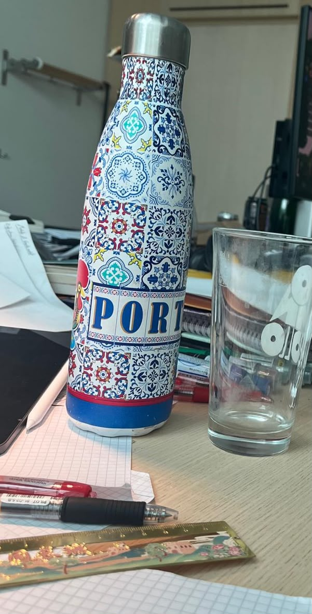

Gabriel Saadia
PhD student in mathematics, Stockholm University
I am a PhD student in mathematics at Stockholm University. My research interests lie at the intersection of category theory, mathematical logic, topology, type theory and homotopy theory. My current work focuses on virtual ultracategories, a recent categorification of topological spaces that generalises ultracategories.
Papers and preprints
-
Categorified convergence
-
Geometric morphisms of virtual ultracategories2026
-
Extending conceptual completeness via virtual ultracategories2025
-
Rigidification of cubical quasi-categories2024
Slides
-
VF vs VU: towards a filter version of virtual ultracategoriesJun 2026
-
Soberness as idempotent-completenessJul 2026
-
Extending strong conceptual completeness through virtual ultracategoriesJul 2025
-
Can we escape strictness? On the coherence problem in HoTTJun 2024